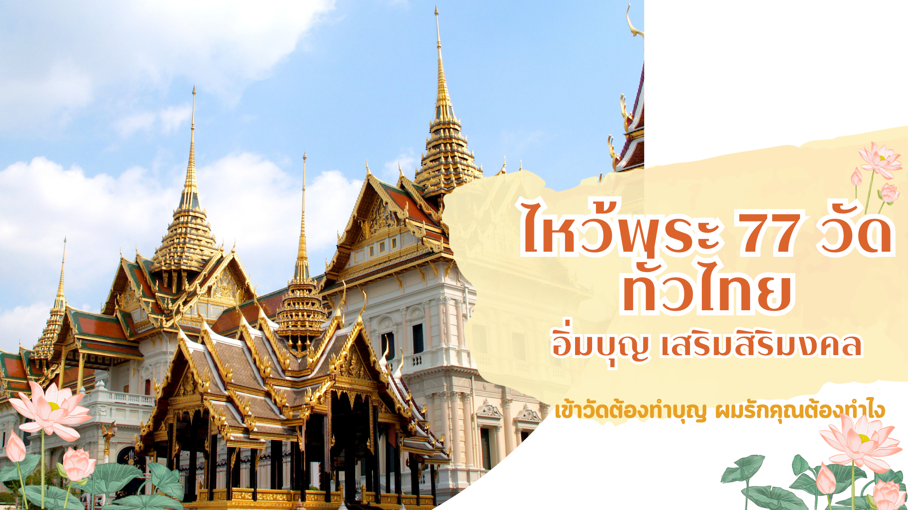

วัดในสังคมไทย มีประวัติมาอย่างยาวนานหลายยุคหลายสมัย วัดในแต่ละยุคสมัยแสดงให้เห็นถึงศิลปะและความเจริญรุ่งเรื่อง ในแต่ละยุคสมัยนั้นๆ ในปัจจุบันวัดยังคงเป็นสถานที่ที่ถูกใช้ในการประกอบพิธีกรรมทางศาสนา เป็นสถานที่ยึดเหนี่ยวจิตใจ ของชาวพุทธอย่างช้านานนอกจากนี้วัดยังถือว่าเป็นแหล่งท่องเที่ยวทางวัฒนธรรมของประเทศไทยที่มีมีการสะท้อนวิถีชีวิต มีเอกลักษณ์และความสวยงามที่เฉพาะตัว ในปัจจุบันจากความเจริญก้าวหน้าทางเทคโนโลยี ได้ส่งผลให้กลุ่มเยาวชนรุ่นหลัง หันไปสนใจการท่องเที่ยวในรูปแบบอื่นมากขึ้น และ สนใจการเข้าวัดน้อยลง เพราะมองว่าวัดไม่มีสิ่งใดน่าสนใจ หรือหลายคน อาจมองว่าวัดเป็นเพียงสถานที่จอดรถ เป็นสถานที่สำหรับพระสงฆ์เท่านั้น แต่แท้จริงแล้วตั้งแต่ในอดีตจนถึงปัจจุบัน วัดคือศูนย์ร่วมจิตใจของคนในพื้นที่บริเวณนั้นทุกคน และเนื่องจากความเจริญทางเทคโนโลยีและการเข้าถึงเครือข่ายอินเตอร์เป็นสิ่งที่คนส่วนใหญ่มีความสามารถในการเข้าถึง ทางคณะผู้จัดทำจึงเล็งเห็นวิธีในการนำเสนอวัดที่สวยงามในประเทศไทยผ่าน การสร้างเว็บไซต์แนะนำวัดที่มีชื่อเสียงของแต่ละจังหวัดอย่างละหนึ่งวัด หรือวัดเก่าแก่คู่บ้านคู่เมืองของจังหวัดนั้นๆ ออกมานำเสนอให้แก่คนที่สนใจได้เป็นแนวทางในการท่องเที่ยว เพื่อให้คนรุ่นใหม่ได้เห็นความสวยงามและเปลี่ยนมุมมองในการมองวัด ให้ได้หันกลับมาสนใจและท่องเที่ยววัดในประเทศไทยให้มากขึ้น
